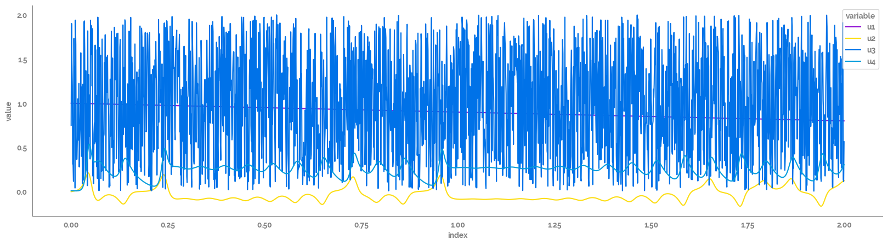

scikit-identification Example¶
[68]:
import numpy as np
import pandas as pd
import matplotlib.pyplot as plt
import seaborn as sns
[69]:
from skmid.models import generate_model_parameters, DynamicModel
from skmid.integrator import RungeKutta4
[70]:
if "jms_style_sheet" in plt.style.available:
plt.style.use("jms_style_sheet")
Initial Parameters¶
[167]:
def lorenz(x, y, z, s=10, r=28, b=2.667):
"""
Given:
x, y, z: a point of interest in three dimensional space
s, r, b: parameters defining the lorenz attractor
Returns:
x_dot, y_dot, z_dot: values of the lorenz attractor's partial
derivatives at the point x, y, z
"""
x_dot = s*(y - x)
y_dot = r*x - y - x*z
z_dot = x*y - b*z
return x_dot, y_dot, z_dot
def lorenz_arrays(dt = 0.01, num_steps = 1000):
# Need one more for the initial values
xs = np.empty(num_steps + 1)
ys = np.empty(num_steps + 1)
zs = np.empty(num_steps + 1)
# Set initial values
xs[0], ys[0], zs[0] = (0., 1., 1.05)
# Step through "time", calculating the partial derivatives at the current point
# and using them to estimate the next point
for i in range(num_steps):
x_dot, y_dot, z_dot = lorenz(xs[i], ys[i], zs[i])
xs[i + 1] = xs[i] + (x_dot * dt)
ys[i + 1] = ys[i] + (y_dot * dt)
zs[i + 1] = zs[i] + (z_dot * dt)
return xs, ys, zs
[235]:
# Choose an excitation signal
np.random.seed(42)
N = 2000 # Number of samples
fs = 1 # Sampling frequency [hz]
t = np.linspace(0, (N - 1) * (1 / fs), N)
m=-0.0001
c=1
x=np.arange(N)
f=5
df_input = pd.DataFrame(
data={
"u1": m*x + c,
# "u1": 2 * np.random.random(N),
# "u2": 2 * np.random.random(N),
# "u1": np.sin(np.pi * f * x / fs),
"u2": lorenz_arrays(num_steps=N-1)[0] * 0.01,
"u3": 2 * np.random.random(N),
"u4": lorenz_arrays(num_steps=N-1)[2] * 0.01
},
index=t,
)
x0 = [1, -1] # Initial Condition x0 = [0;0]; [nx = 2]
parameter_dict={"N": N,
"fs": fs,
"t": t,
"x0": x0}
print("Initial Parameters")
print(parameter_dict)
display(df_input.head())
print(df_input.shape)
Initial Parameters
{'N': 2000, 'fs': 1, 't': array([0.000e+00, 1.000e+00, 2.000e+00, ..., 1.997e+03, 1.998e+03,
1.999e+03]), 'x0': [1, -1]}
| u1 | u2 | u3 | u4 | |
|---|---|---|---|---|
| 0.0 | 1.0000 | 0.000000 | 0.749080 | 0.010500 |
| 1.0 | 0.9999 | 0.001000 | 1.901429 | 0.010220 |
| 2.0 | 0.9998 | 0.001890 | 1.463988 | 0.009957 |
| 3.0 | 0.9997 | 0.002708 | 1.197317 | 0.009711 |
| 4.0 | 0.9996 | 0.003485 | 0.312037 | 0.009480 |
(2000, 4)
[222]:
_ = plt.figure(figsize=(20, 5))
_ = sns.lineplot(data=df_input
.reset_index()
.melt(id_vars="index"),
x="index",
y="value",
hue="variable"
)
_ = sns.despine()

Symbolics¶
[257]:
(x, u, param) = generate_model_parameters(nstate=1, ninput=4, nparam=2)
# assign specific name
# x1, x2 = x[0], x[1]
x1 = x[0]
u1, u2, u3, u4 = u[0], u[1], u[2], u[3]
ka, kb = param[0], param[1]
param_truth = [0.1, 0.5] # ca.DM([0.1, 0.5])
# rhs = [u1 + ka - x1, u1 + u2 / x1 + u1 / x2 / x1 + kb * x2]
rhs = [(u2 - ka - x1 * u1 * kb + u3 + kb * u4) + u1]
# rhs = [u2 + u4 / x1 + u3 / x1 + kb*u1*u4]
# rhs = [u2*u4/x1 + u3/x1*kb*u4 + u1/x1*kb*u4]
rhs
[257]:
[MX(@1=u[0], @2=param[1], (((((u[1]-param[0])-((x*@1)*@2))+u[2])+(@2*u[3]))+@1))]
Define the Dynamic Model¶
[258]:
sys = DynamicModel(states=x, inputs=u, param=param, model_dynamics=rhs)
sys.print_summary()
Input Summary
-----------------
states = ['x1']
inputs = ['u1', 'u2', 'u3', 'u4']
parameter = ['p1', 'p2']
output = ['y1']
Dimension Summary
-----------------
Number of inputs: 3
Input 0 ("x(t)"): 1x1
Input 1 ("u(t)"): 4x1
Input 2 ("p"): 2x1
Number of outputs: 2
Output 0 ("xdot(t) = f(x(t), u(t), p)"): 1x1
Output 1 ("y(t) = g(x(t))"): 1x1
Run the forward simulation and save the output as a data frame¶
[259]:
rk4 = RungeKutta4(model=sys, fs=fs)
rk4.simulate(x0=x0[0], input=df_input, param=param_truth)
df_sim = rk4.output_sim_
display(df_sim.head())
print(df_sim.shape)
| y1 | |
|---|---|
| 0.0 | 1.000000 |
| 1.0 | 1.907833 |
| 2.0 | 3.365659 |
| 3.0 | 3.906896 |
| 4.0 | 4.026225 |
(2001, 1)
Plot the output¶
[260]:
_ = plt.figure(figsize=(20, 5))
_ = sns.lineplot(data=df_sim
.reset_index()
.melt(id_vars="index"),
x="index",
y="value",
hue="variable"
)
_ = sns.despine()
[ ]: